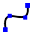
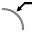

Modificación de la geometría
En TecZone Plegado tiene un potente editor 2D de croquis para modificar, limpiar o añadir a su geometría. Utilice la tecla de acceso directo S para entrar en el modo de croquis. El editor muestra la pieza en la vista desplegada.

En la vista desarrollada, haga clic en el Subsanar icono  o pulse la tecla de acceso directo S.Se abre un menú con varios iconos para procesar el desarrollo:
o pulse la tecla de acceso directo S.Se abre un menú con varios iconos para procesar el desarrollo:

Panel de croquis
| Icono | Símbolo | Significado |
|---|---|---|
|
Seleccionar |
Seleccionar objetos, líneas, entradas, etc. |
|
Línea |
Croquizar una línea |
|
Líneas conectadas |
Croquiza cualquier número de líneas |
|
Paralela |
Croquiza una paralela a una línea |
|
Normal |
Croquiza una tangente a una curva |
|
Línea de plegado |
Croquiza una línea normal a una línea |
|
Arco con punto central |
Croquizar una línea de plegado |
|
Arco circular de 2 puntos |
Croquiza un arco a partir de un punto central, un punto inicial y un punto final |
|
Arco circular de 3 puntos |
Croquiza un arco circular a través de dos puntos definidos (punto inicial y final) |
|
Arco circular tangencial |
Croquiza un arco tangencial a los elementos de croquis |
|
Rectángulo |
Croquiza un rectángulo |
|
Punto central-rectángulo |
Croquiza un rectángulo desde el centro |
|
Círculo |
Croquiza un círculo. Seleccione el punto central del círculo y arrastre el cursor para definir el radio o introduzca un valor para el radio |
|
Perímetro con 2 puntos |
Croquiza un círculo según la circunferencia. Seleccione un punto de la circunferencia, luego un segundo punto y un tercer punto. |
|
Perímetro con 3 puntos |
Croquiza un círculo según la circunferencia. Seleccione un punto de la circunferencia, luego un segundo punto y un tercer punto. |
|
Círculo con 2 tangentes |
Croquiza un círculo con dos tangentes. Introduzca el diámetro del círculo, luego seleccione la primera tangente y luego la segunda tangente. |
|
Círculo con 3 tangentes |
Croquiza un círculo con tres tangentes. Introduzca el diámetro del círculo, luego seleccione la primera tangente, luego la segunda tangente y luego la tercera tangente. |
|
Punto central-vértice de polígono |
Croquiza un círculo con tres tangentes. Introduzca el diámetro del círculo, luego seleccione la primera tangente, luego la segunda tangente y luego la tercera tangente. |
|
Punto central- centro de borde lateral de polígono |
Croquiza un polígono. Especifique el número de lados y seleccione un punto central y el centro de un borde lateral |
|
Polígono con borde lateral |
Croquiza un polígono. Especifique el número de lados y defina el punto inicial y final de un lado. |
|
Redondeo |
Redondea la esquina en el vértice de dos elementos de croquis con un radio introducido, con lo que se crea un arco tangencial |
|
Chaflán |
Crea un chaflán en la esquina de la intersección de dos elementos de croquis |
|
Recorte de esquina redondo |
Recorta la esquina en la intersección de dos elementos de croquis con un radio introducido |
|
Recorte de esquina cuadrado |
Recorta la esquina en la intersección de dos elementos de croquis con un rectángulo. La dimensión del rectángulo puede introducirse de antemano. |
|
Recorte cuadrado |
Crea una entalladura rectangular. Debe introducir la distancia de la esquina, la profundidad de entalladura y, a continuación, seleccionar una esquina. |
|
Recorte de agujero oblongo |
Crea una entalladura en forma de agujero oblongo. Debe introducir la distancia de la esquina, la anchura de entalladura, la profundidad de entalladura y, a continuación, seleccionar una esquina. |
|
Recorte triangular |
Crea una entalladura triangular. Debe introducir la distancia de la esquina, la anchura de entalladura, la profundidad de entalladura y, a continuación, seleccionar una esquina. |
|
Ojo de la cerradura |
Crea un keyhole en un círculo con los valores introducidos. |
Redondeo completo de 3 segmentos |
Redondea tres elementos de croquis conectados |
|
|
Prolongar elemento |
Seleccione el elemento de croquis que se va a extender |
|
Adaptar elemento |
Seleccione el elemento de croquis que se va a recortar |
|
Fundir |
Se utiliza para recortar y unir varias polilíneas separadas en una sola |
|
Desplazar elementos |
Offset uno o más elementos de croquis, zonas de borde de modelo de croquis, o caras de modelo por una distancia especificada |
|
Mover |
Seleccione un elemento de croquis con ctrl seleccione un punto de referencia y mueva el elemento de croquis |
|
Rotación |
Seleccione un elemento de croquis con ctrl seleccione un punto central de rotación, luego un punto inicial y un punto final para rotar el elemento de croquis |
|
Escalar |
Seleccione un elemento de croquis con ctrl seleccione un punto base, luego un punto de referencia inicial y un punto de referencia final para escalar el elemento de croquis |
|
Simetrizar |
Seleccione un elemento de croquis con ctrl y, a continuación, el inicio de la línea de simetría y, a continuación, el final de la línea de simetría para reflejar el elemento de croquis |
|
Matriz lineal |
Utilice matrices lineales para crear varias copias referenciadas de uno o varios elementos de croquis que puede espaciar a distancias iguales a lo largo de uno o dos recorridos lineales. Haga clic en la matriz lineal e introduzca los valores deseados |
|
Matrices circulares |
Utilice matrices circulares para crear varias copias referenciadas de uno o varios elementos de croquis que puede espaciar a distancias iguales alrededor de un eje. Haga clic en matrices circulares e introduzca los valores deseados |
|
Combinar superficies |
Seleccione dos o más elementos de croquis cerrados para combinar superficies entre sí |
|
Superficie de corte |
Seleccione dos o más elementos de croquis cerrados para generar un área de corte de los elementos seleccionados |
|
Adaptar superficie |
Seleccione dos o más elementos de croquis cerrados para recortar la superficie |
|
Copiar recorte |
Puede hacer varias copias de un escote a lo largo de un borde, utilizando este útil. En primer lugar, introduzca el espacio entre las copias y el número de copias del escote que desea hacer. A continuación, seleccione el escote haciendo clic en los segmentos de dos líneas adyacentes al escote |
|
Eliminar recorte |
Puede eliminar un escote en una esquina o a lo largo de un segmento de línea utilizando este útil. Haga clic en los segmentos de dos líneas adyacentes al escote para eliminarlo |
|
Voltear recorte |
Puede reflejar un escote en una esquina o a lo largo de un segmento de línea utilizando este útil. Haga clic en los segmentos de dos líneas adyacentes al escote para reflejarlo |
 |
Trazado curvo |
Para iniciar una nueva spline, haga clic en el punto inicial y, a medida que vaya haciendo clic en los puntos siguientes, se irá creando la spline. Si desea cerrar la spline, pulse Alt y luego haga clic |
|
Perfil |
Introduzca la longitud de la base, la altura del borde, el espesor, el ángulo del borde, el radio interno y pulse Intro para crear un perfil |
|
Texto |
Permite dibujar el texto que será marcado en la pieza por la máquina láser. Al hacer clic en este botón de útil, la barra de entrada muestra cuadros para introducir el texto, la dimensión y el ángulo de rotación |
|
Texto |
Se utiliza para tomar las formas de los caracteres de cualquier fuente de letra TrueType y convertirlas en polilíneas. A continuación, se puede aplicar equipamiento láser a estas polilíneas y cortarlas.La primera vez que se pulsa este botón, aparece el cuadro de diálogo de fuente de letra, que permite elegir la fuente de letra que se utilizará para el texto |
|
Formas estándar |
Permite crear varias formas comunes e insertarlas en el dibujo. Al hacer clic en este botón, aparece el cuadro de diálogo de hacer forma que le permite elegir entre la paleta de formas comunes que se enumeran |
|
Acotamiento sencillo |
Seleccione el primer punto de dimensionamiento, luego el segundo punto de dimensionamiento y posicione la línea de acotamiento |
|
Acotamiento de referencia |
Seleccione el primer punto de dimensionamiento, luego el segundo punto de dimensionamiento y posicione la línea de acotamiento |
|
Cadena de medidas |
Seleccione el primer punto de dimensionamiento, luego el segundo punto de dimensionamiento, posicione la línea de acotamiento y seleccione el siguiente punto de dimensionamiento |
|
Medida de ordenada horizontal |
Las dimensiones de ordenadas son un conjunto de dimensiones que se miden desde el cero de ordenada en el dibujo. Seleccione un punto de referencia y posicione el dimensionamiento |
|
Medida de ordenada vertical |
Las dimensiones de ordenadas son un conjunto de dimensiones que se miden desde el cero de ordenada en el dibujo. Seleccione un punto de referencia y posicione el dimensionamiento |
|
Ángulo acotamiento |
Crea un dimensionamiento para un ángulo. Seleccione la primera línea y luego la segunda línea en la que desea dimensionar el ángulo |
 |
Radio acotamiento |
Crea un dimensionamiento para un radio. Seleccione el círculo en el que desea dimensionar el radio. Dimensione el diámetro con ctrl |
Radio de acotamiento con línea de indicación trazada |
Crea un dimensionamiento con línea continua para un radio. Seleccione el círculo en el que desea dimensionar el radio. Dimensione el diámetro con ctrl |
|
|
Rotulación |
Permite añadir indicaciones al dibujo en forma de leyendas. Para crear una leyenda, escriba el texto que desea mostrar, haga clic para indicar hacia dónde debe apuntar la flecha y vuelva a hacer clic para indicar dónde debe colocarse el texto. |
|
Acotamiento segmento |
Permite añadir dimensionamientos para segmentos rectos y curvos. Haga clic en el segmento que desea dimensionar y vuelva a hacer clic para posicionar la dimensión. O mantenga pulsado y haga clic en un segmento para posicionar la dimensión automáticamente. |